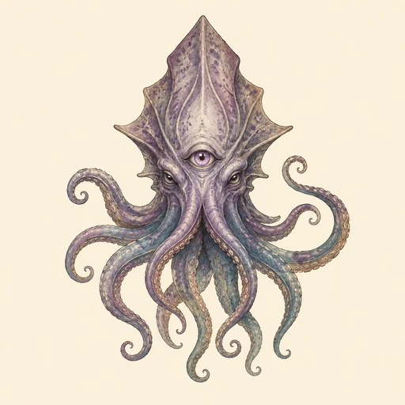
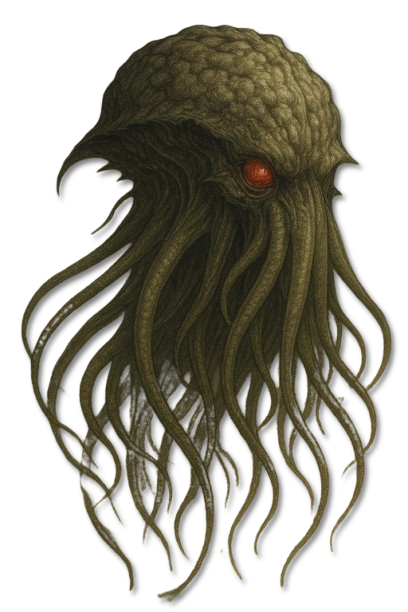
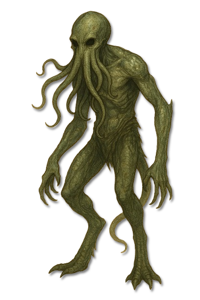
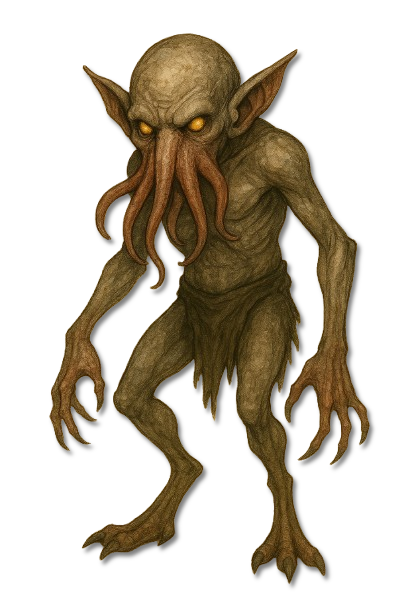
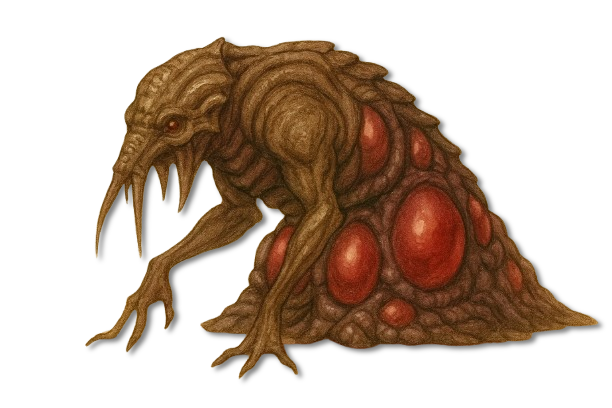

???
???
Noch keine gesicherte Überlieferung.

KreaturenarchivAleria und infernale Sphären · Amons Domäne und Brutstätten · Archivblatt IV / 10
Amons Schwarmimperium und die Kreaturen des Wahnsinns
Psioniden sind Amons lebendiges Schwarmimperium: Fleisch, Blut und Gedanken eines einzigen psionischen Netzes. Lenker führen, Sucher archivieren, Lauerer tragen rohe Gewalt, Schädlinge erhalten die Ordnung, Brütlinge liefern neue Formen und Wandler verkörpern die von Amon gelenkte Metamorphose.

„Wo das Denken stirbt, beginnt ihr Reich; jeder einzelne Körper ist nur eine Seite in Amons lebendem Archiv.“Archiv der Verborgenen Wahrheit
Sechs Merkmale · Skala 1–10
Die Psioniden-Tafel bewertet die Kräfte des gemeinsamen Bewusstseins. Hohe Werte bei Abhängigkeit und Netzstörung bezeichnen zugleich die wichtigste systemische Schwachstelle des Schwarms.
Quelle der Einordnung: Aus Hierarchie, psionischer Verbindung, Gedankenarchivierung, Gestaltwandel und der Abhängigkeit von Amons Willen abgeleitet
Amons Schwarmordnung
Die sechs benannten Formen erfüllen klar getrennte Aufgaben. Vier weitere Stellen der alten Tafel bleiben als unbekannt erhalten.
Lenkende und tragende Formen
Lenker, Sucher und Lauerer bilden die benannten höheren und tragenden Funktionen des Schwarms.
Psionide
Die höchsten Willensträger und Generäle des Schwarms; sie koordinieren Legionen und brechen fremden Willen.

Psionide
Archivare der Gedanken, die Wahrnehmungen sammeln, ordnen und durch das psionische Netz an den Schwarm weitergeben.

Psionide
Willensschwache Kolosse und lebende Zauberspeicher, deren rohe Kraft durch fremde Befehle gelenkt wird.
???
Noch keine gesicherte Überlieferung.
???
Noch keine gesicherte Überlieferung.
Diener und Wandelkörper
Schädlinge, Brütlinge und Wandler erhalten, vermehren und verändern Amons Schwarm.

Psionide Kreaturen
Kleine, intelligente Diener ohne eigenen Willen, die in großer Zahl das Rückgrat des Schwarmimperiums bilden.

Psionide Kreaturen
Eine harmlose embryonale Grundform, die unter dem Einfluss eines Lenkers zu anderen Psioniden heranwachsen kann.

Psionide Kreaturen
Eine instabile Gestalt reiner Metamorphose, deren Körper von Amons Willen immer wieder neu überschrieben werden kann.
???
Noch keine gesicherte Überlieferung.
???
Noch keine gesicherte Überlieferung.
Die Psioniden sind Amons gewaltiges Schwarmimperium, geboren aus dem Fleisch der Tiefe und dem Willen zur Verderbnis. Sie sind keine bloßen Werkzeuge, sondern lebendige Teile seiner Domäne.
Jede Psionide ist ein Teil des größeren Ganzen. In Amons Reich bilden sie das Fleisch, das atmet, das Blut, das fließt, und die Gedanken, die sich durch das psionische Netz bewegen.
Psioniden entstanden durch Amons bewussten Schöpfungswillen. Jede Form erfüllt einen eigenen Zweck innerhalb eines Plans, der sich über lange Zeit entfaltet.
Sie handeln nicht als voneinander unabhängige Wesen, sondern als Ausläufer eines einzigen Bewusstseins. Diese Ordnung macht den Schwarm mächtig und zugleich abhängig.
Lenker stehen an der Spitze und brechen fremden Willen. Sucher hüten und ordnen Gedanken. Lauerer dienen als willensschwache Kolosse und lebende Zauberspeicher.
Schädlinge halten als kleine Diener die Domäne am Leben. Brütlinge bilden harmlose Anfangsstadien, während Wandler als instabile Körper reiner Metamorphose von Amon neu geformt werden.
Ein unsichtbares Netzwerk verbindet Gedanken, Befehle und Beobachtungen. Lenker koordinieren andere Formen, während Sucher ihre Erkenntnisse dem gesamten Schwarm zugänglich machen.
Wird Amons Einfluss gestört, können Psioniden Orientierung und Formstabilität verlieren. Versuche, diese Verbindung zur Kontrolle des Schwarms zu nutzen, bleiben gefährlich und unzuverlässig.
Lenker müssen überrascht werden, bevor sie ihre psionische Kontrolle entfalten. Schutz gegen Gedankeneingriff ist wichtiger als schwere Rüstung.
Sucher sind aufmerksam und schwer zu täuschen. Ein Angriff muss erfolgen, bevor sie Absicht und Position im Netz weitergeben.
Lauerer besitzen wenig eigenen Plan, aber enorme Zerstörungskraft. Abstand und konzentrierter Fernkampf begrenzen ihre Körpermacht.
Einzelne Schädlinge sind schwach; große Mengen können eine Anlage entkernen. Gruppenweise Eindämmung und die Sicherung ihrer Brutstätten sind entscheidend.
Brütlinge sind in der Grundform harmlos, müssen aber vor einer gelenkten Umwandlung isoliert werden.
Wandler sind unberechenbar und können ohne Befehl degenerieren. Distanz schützt vor plötzlichen Körperveränderungen.
Klare Signale, feste Aufgaben und Schutz gegen Gedankeneingriff helfen einer Gruppe, fremde Impulse früh zu erkennen. Sobald Wahrnehmung und Befehl auseinanderfallen, muss der Rückzug Vorrang erhalten.
Der sicherste Angriff richtet sich nicht immer gegen den stärksten Körper, sondern gegen die Verbindung, über die Amon den Schwarm koordiniert.